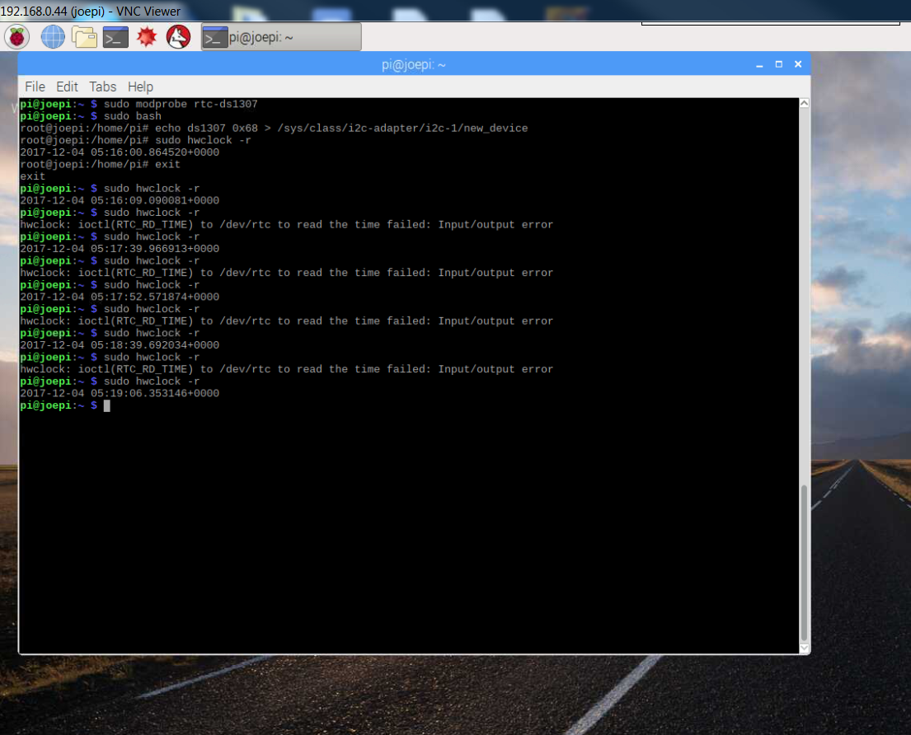

ITS ALIVE!!!!
So recently I have created a python code that allows the Pis to communicate over
a network so long as they aren't block by a firewall (Like it is on the Guess Network at
humber :( ) I made a hardware adjustment to the Morse Key itself in order to allow the
physical connection to make it better, becuase before the connection was studdering
alot so it wouldnt read in. I also had another road block with how I would connect the
key to one of the pis. There are pins that I soldered on to connect to BCM pin 27 so that I
could connect the key. After that it worked like a charm except I believe I burnt out a capacitor
on my touch screen display so it no longer has touch functionality, which sucks becuase when I get
the gui interface to work it isn't going to allow it to work so it will remain on the terminal window.
I haven't purchased anything new yet... I will be getting headphones for the Pis because the program
that I've created makes sounds when you type in Morse, FANCY! Also my code is available online
there are two versions of the code, the server and the client (Network connection required)
and here is a link to a repository that I will referecne in my build instructions that has a bit
of code that helped me learn how to do my code above. (Also I borrowed parts of this code to help
in my functionality)
link to useful github
Week 9 Video
Here is my video below
Week 8 placard and script
My placard can be found in my document's folder here Placard
and my script will follow the moment I get to the computer that I saved it on. I forgot to push to Github...
Script for Hardware Project
By Andrew McGuire
*title appears*
“Morse TouchPi by Andrew McGuire” – narrator
*Clip of the project getting put together*
“My project here include a Raspberry pi 3, and Adafruit TFT LCD touch Display, and a eisco contact key, for inputting morse of course”
*Screen pans to a second pi”
“Oh and this is a second pi with all of the same equipment to receive and send to the first Pi”
*Clip of me typing in Morse*
“So this is how the project will work”
“First I’ll initiate the connection between the Pis over a network, and then On one pi I will begin to key in Morse”
*Keying in Morse on contact key*
“Then the other Pi which will be listening to a port will receive the incoming message and begin to display it on the LCD”
“Now the connection to the PI for the Key just listen for the signal across the line, so the project will be able to use other contact keys, paddles, and electric keyers.”
“ And that’s it, so long as you can get a network connection between the Pis and have this setup with the code that will be posted to my git-hub you’ll be able to have your own Morse Touch Pi”
Week 7 The Return (B- November 24th)
I've been able to run the software for the SensorHat for the raspberry pi, unfortunatley I wasn't able to get the sensor to work in class as i had some issues with my display on the touch
display for the pi. Afterwards in my own time I was able to get some of the sensors to work, but I unfortunatley was not able to get the display to work with the sesnors at the same time
because the display uses some of the same IC2 ports as the sensors. I'm going to try and get my second pi set up for vnc and with all of the sensors before the next class. As well as
get some of my own code started for my morse code.
Weekend update,
I managed to get VNC to work on my second Pi that isn't set up for the touch screen yet. I have the timer and the light sensor working but when I try and read the temperature I keep getting
the same temp no matter what I do to try and change the temp.
Here is the time working

Example of the Light sensor working
Greenhouse Control Loop
Mon Dec 4 05:25:29 2017
Readings Temperature: 69.0C Lights: 22.0lux
Setpoints Temperature: 25C Lights: 255 lux
Controls Heater: 0 Lights: 233
Delaying 1 seconds prior to repeating
Greenhouse Control Loop
Mon Dec 4 05:25:31 2017
Readings Temperature: 69.0C Lights: 12.0lux
Setpoints Temperature: 25C Lights: 255 lux
Controls Heater: 0 Lights: 243
Delaying 1 seconds prior to repeating
Greenhouse Control Loop
Mon Dec 4 05:25:33 2017
Readings Temperature: 69.0C Lights: 11.0lux
Setpoints Temperature: 25C Lights: 255 lux
Controls Heater: 0 Lights: 244
Delaying 1 seconds prior to repeating
Greenhouse Control Loop
Mon Dec 4 05:25:35 2017
Readings Temperature: 69.0C Lights: 22.0lux
Setpoints Temperature: 25C Lights: 255 lux
Controls Heater: 0 Lights: 233
Delaying 1 seconds prior to repeating
pi@joepi:~ $ sudo i2cdetect -y 1
0 1 2 3 4 5 6 7 8 9 a b c d e f
00: -- -- -- -- -- -- -- -- -- -- -- -- --
10: -- -- -- -- -- -- -- -- -- -- -- -- -- -- -- --
20: -- -- -- -- -- -- -- -- -- -- -- -- -- -- -- --
30: -- -- -- -- -- -- -- -- -- -- -- -- -- -- -- --
40: -- -- -- -- -- -- -- -- 48 -- -- -- -- -- -- --
50: -- -- -- -- -- -- -- 57 -- -- -- -- -- -- -- --
60: -- -- -- -- -- -- -- -- 68 -- -- -- -- -- -- --
This is what I saw when trying to detect the chips with out the BME280 sensor
now I do not get 68 when I connect the sesnor.
Week 6 The Return (B- November 24th)
So what I've done in the past 5 weeks includes getting all of my parts for my project, I've completed my sensor hat pcb board and retrieved its sensor components(minimul adjustments required).
The soldering of the pcb board had a hiccup. I had soldered the 24 pin connector upside down, so I had to remove it and reconnect it. Upside to that is I got alot of desoldering experience.
I also damaged some copper traces while removing the connector and so i had to jury-rig a solution. I ended up soldering a left over resistor lead over the gap in the trace and making an
intentional solder bridge over another trace that slightly damage. I tested the functionality of the sensor had with Vlad testing setup in the proto type lab and it worked without a problem!
I also have a image created for both of my pies so that the touch screen function. Currently only one has its image installed, but I don't suspect the other is going to have any issues. As the
process of installing the first one onto a 128 GB chip had some of its own unforseen difficulties but the other chip that I need to install on is only 32 GB so i should be able to do it without
funky drive wizardry. (Its not actually magic of course but it was very finiky that once I got it right it may as well of been magic)
Week 5 Hardware Parts Picture (B - October 13th)
I have most of my parts currently, just need to order the second PI and second Morse Key.
Week4 Hardware Budget (B - Friday Sept. 29)
Handed in my budget here it is
Week 3 Hardware (A - Monday Sept. 25, B - Friday Sept. 22)
Here is my project gantt chart
Handed in my gantt chart.
Week 2 Hardware (A - Monday Sept. 18, B - Friday Sept. 15)
Handed in my project proposal
Week 1 Hardware (A - Monday Sept. 11, B - Friday Sept. 8)
Did a test. 100% whoot!
Week 0 2017-2018 Capstone Project Overview
Didn't really do anything here. Had my hardware project idea already